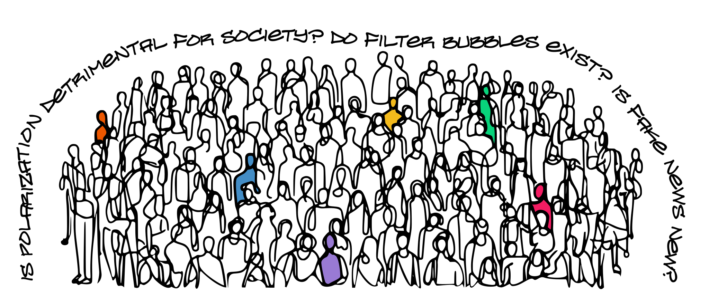

In a team of motivated PhD colleagues from our Strategic Communication Group at
Wageningen University and Research, we host workshops for a diverse range of groups.
We have most experience with students and scholars, but our format is flexible to be
adjusted to any group of professionals.
Interested to find out what we can bring to your institution?
Let's connect: wies.ruyters@wur.nl